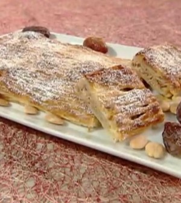

I 5 cocktail da bere anche al mattino
 msn lifestyle da Microsoft News Vai alla navigazione Vai al contenuto Salta al piè di pagina Accedi Cambia lingua & contenuti: Afrique francophone (français) América Latina (español) Argentina (español) Australia (English) België (Nederlands) Belgique (français) Brasil (português) Canada (English) Canada (français) Česká republika (čeština) Chile (español) Colombia (español) Danmark (Dansk) Deutschland (Deutsch) España (español) France (français) India (English) India (मराठी) India (हिंदी) India (বাংলা) India (తెలుగు) Indonesia (Bahasa Indonesia) International Edition (English) Ireland (English) Italia (italiano) Magyarország (magyar) Malaysia (English) México (español) Nederland (Nederlands) New Zealand (English) Norge (norsk, bokmål) Österreich (Deutsch) Perú (español) Philippines (English) Polska (polski) Portugal (Português) Schweiz (Deutsch) Singapore (English) South Africa (English) Suisse (français) Suomi (suomi) Sverige (svenska) Türkiye (Türkçe) United Arab Emirates (English) United Kingdom (English) United States (English) United States (español) Venezuela (español) Việt Nam (Tiếng Việt) Ελλάδα (ελληνικά) Россия (Pусский) ישראל (עברית) الإمارات العربية المتحدة (العربية) المملكة العربية السعودية (العربية) مصر (العربية) ไทย (ไทย) 한국 (한국어) 中华人民共和国 (简体中文) 台灣 (繁體中文) 日本 (日本語) 香港特别行政區 (繁體中文) Commenti e suggerimentilifestyle
Cucina Ricette VideoAltro
Notizie Meteo Sport Video Money Oroscopo Gossip Motori Benessere Lifestyle Tech e Scienza Incontri Grecia, attacco con l acido nel monastero: un monaco aggredisce sette vescovi Totti: L Italia unisce, può essere l anno giusto Britney Spears in tribunale: ‘Sono prigioniera, arrestate mi padre’ Ti ricordi tutti gli amori di Lady Gaga? Qui c è la lista di tutti suoi ex (e no, Bradley non cè) Elogio della frutta brutta Una volta per tutte, sushi e sashimi fanno ingrassare? Lo specchietto magico salva cena (al) giapponese eSport – Valerio Gallo vince la Olympic Motorsport Virtual Series Amazon è azienda al top in acquisto di energia rinnovabile Euro2020, nuovi dubbi sulla finale a Wembley Una Vita Anticipazioni 25 giugno 2021: Bellita sospetta di sua figlia Cinta! Imprenditore arrestato senza motivo negli Emirati, forse per ritorsione con l Italia Alpine: Alonso ha un terzo elemento anteriore diverso da Ocon Carlo sta pianificando un incidente per uccidermi : spunta la lettera choc di Lady D. La foto di Letizia di Spagna con la squadra di pallanuoto femminile è la più bella del weekend Le 25 migliori ricette di verdure in padella perfette per l’estate Ricetta pollo affumicato al tè nero con pompelmo e finocchi Voglia di enduro? Ecco le migliori moto per ogni classe Sarmi (Asstel), filiera Tlc anticipa i cambiamenti Borsa Milano su massimi seduta, bene Diasorin, Amplifon, Campari, giù Pirelli Ancora premi per Morrison, il film di Federico Zampaglione: candidatura ai Nastri d Argento 2021, Premio Roma Videoclip e Premio Castiglione Cinema Miami, crolla palazzo di 12 piani: si temono vittime e molti feriti Marc Marquez supera Mick Doohan, ma Johann Zarco “rischia” di superare Colin Edwards Can Yaman e Diletta Leotta volano in Turchia per le presentazioni ai genitori e sì, sono bellissimi Kate Middleton, le sneakers ecologiche che la accomunano a Meghan Markle Avocado made in Puglia tra gli effetti dei cambiamenti climatici Con la camminata sportiva ho imparato ad ascoltare i messaggi del mio corpo Porsche Panamera restyling, le foto spia al Nürburgring Tumori: individuata l origine del medulloblastoma L Ue studia nuovi limiti sulle emissioni. Stellantis sale in borsa Stasera in TV: Film e Programmi di Oggi Giovedì 24 Giugno 2021 Parigi, fermate le due presunte colpevoli di aver investito e ucciso la 31enne italiana Miriam Segato Svolta Snipers: via Salac, tocca a Surra Leon Faun tra musica e cinema: album di debutto ed esordio al cinema ne La terra dei figli Avresti il coraggio di usare questo accessorio su un look elegante? Arriva la Sicily s (R)evolution delle Bibite Sanpellegrino Posizioni yoga al mare Ferrari 296 GTB, la prima V6 è una super ibrida plug-in da 830 CV Covid da record,positivo per quasi 10 mesi 72enne di Bristol Kia Sportage, un edizione speciale per celebrare i 30 anni Ballando con le Stelle, Federico Fashion Style nel cast? L indiscrezione Omicidio in strada a Roma, fermato il presunto responsabile a Napoli: lite per licenziamento C.America: Casemiro ribalta la Colombia,il Brasile vince 2-1 Maria Elena Boschi e il fidanzato Giulio Berruti, baci d’amore e… carezze proibite! – ESCLUSIVO Il rifugio silvestre che guarda alla giungla messicana è una villa brutalista apri&chiudi Nuovi prodotti di bellezza: i nuovissimi arrivi Fibrosi cistica, scoperto un nuovo approccio promettente Ride Vision – Sistemi anticollisione sui mezzi di Poste Italiane Scoperto raro tumore cardiaco con controlli post-Covid Cassa integrazione, 5,4 miliardi di ore Covid. Orlando accelera sulla riforma degli ammortizzatori universali Love Island: Cesare tentato da Lucrezia, poi bacia Giulietta!I 5 cocktail da bere anche al mattino
De Agostini 25/10/2020 Grecia, attacco con l acido nel monastero: un monaco aggredisce sette vescovi Totti: L Italia unisce, può essere l anno giusto © Olga Yastremska - 123.rfCocktail per la colazione ? Sì, avete letto bene: se siete amanti dei drink , potete fare vostra tale usanza che ha preso piede soprattutto nei paesi Anglosassoni. Qui, i breakfast drink spopolano generalmente presso gli hotel e, diciamoci la verità, se non dovessimo andare a lavoro, potremmo concederceli volentieri. Nessuno ci proibisce, però, di sorseggiarne uno in compagnia, magari quando abbiamo appuntamento con le amiche per una sessione di shopping o in occasione di un incontro di natura lavorativa. Sì, ma quale prediligere? Dal Bloody mary al Mimosa, ecco i cocktail da fare in casa perfetti per iniziare (o proseguire) la giornata. Ma prima una raccomandazione: ricordate di bere responsabilmente !
Cocktail da bere al mattino: le scelte migliori
Che una piccola dose di alcool non possa che fornirci lo sprint ideale per affrontare gli impegni mattutini è cosa certa. Ma i cocktail leggeri da poter sorseggiare sono tanti: come destreggiarsi nel variegato mondo dei drink? Ecco quelli che, secondo noi, sono i migliori per le prime ore della giornata.
5. Cocktail da hangover: il Bloody Mary
Se non fosse per la vodka potremmo scambiarlo per un centrifugato (un toccasana per i postumi della sbornia) almeno dati gli ingredienti .
Se vi sembra strano sentir parlare di un cocktail con pomodoro e sedano è perché, probabilmente, non avete mai assaggiato il Bloody Mary . Rosso e torbido, è dedicato alla regina inglese "Maria la sanguinaria".
4. Bollicine prima di pranzo: Mimosa
Il tipico cocktail da bere in compagnia delle amiche, magari nell'ambito di un aperitivo prima di pranzo.
A base di champagne, succo di arancia e poco altro, il Mimosa si caratterizza per il vivace colore giallo, e viene spesso abbinato alla Festa delle donne .
3. Analcolico al sapore d’America: il San Francisco
Adorato, come il precedente, dall’universo femminile, il San Francisco nasce negli anni '30 nell’omonima città americana.
Rientra tra i cocktail analcolici - perfetto per gli astemi, quindi - ma ha un sapore talmente fresco che va a genio anche ai bevitori incalliti.
2. Cocktail fruttato: Sex on the Beach
Fresco e fruttato, nonostante sia ideale da bere dopo cena, il Sex on the Beach è apprezzato anche prima dei pasti, in occasione di un aperitivo spumeggiante, magari vista mare.
Va servito rigorosamente con ghiaccio e tanta frutta colorata ed invitante.
1. Bellini cocktail, il long drink tutto italiano
Long drink italiano, il Bellini cocktail ha come base una purea di pesca e l’aggiunta di vino bianco frizzante.
Ideato nel 1948 il suo apprezzamento nel Mondo non conoscere arresto.
Continua Microsoft e i suoi partner potrebbero ottenere una provvigione se acquisti qualcosa tramite collegamenti consigliati su questa pagina ARGOMENTI PER TE1 2 3 4 5 6
POTREBBE PIACERTI
Ann. Microsoft Sconto 10% extra dal 18 al 24 giugno, sui prodotti selezionati utilizzando il coupon: SORRISO HP Store Libertà di Ascolto! Oltre 60.000 Audiolibri e Podcast sempre con te. Audible 2 progressivi a 129€ - festeggia con occhiali24.it Occhiali24.itAltro da DeAbyDay
Sindrome dell impostore: cos è, quali sono i sintomi e come intervenire
Sport in estate: allenarsi al mare
French toast salato: ricetta semplice e gustosa (anche veg)
Visita il sito Commenti e suggerimenti © 2021 Microsoft Privacy e cookie Impostazioni di privacy Condizioni per l utilizzo Info inserzioni Guida Newsletter MSN nel mondoHai trovato interessante l'articolo?
Metti mi piace su Facebook per vedere notizie simili
Seguo già la pagina. Non visualizzare più il messaggioInvia feedback MSN
Ti ringraziamo per il contributo.
Come possiamo migliorare?Fornisci una valutazione generale del sito:
Invia Chiudi Informativa sulla privacy Guida Guida e supporto Si apre in una nuova finestra Apre un sito esterno Apre un sito esterno in una nuova finestra